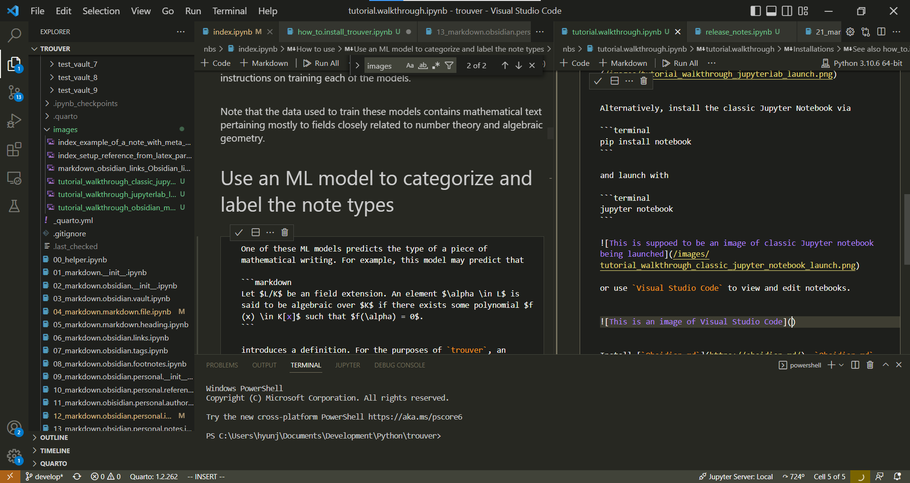
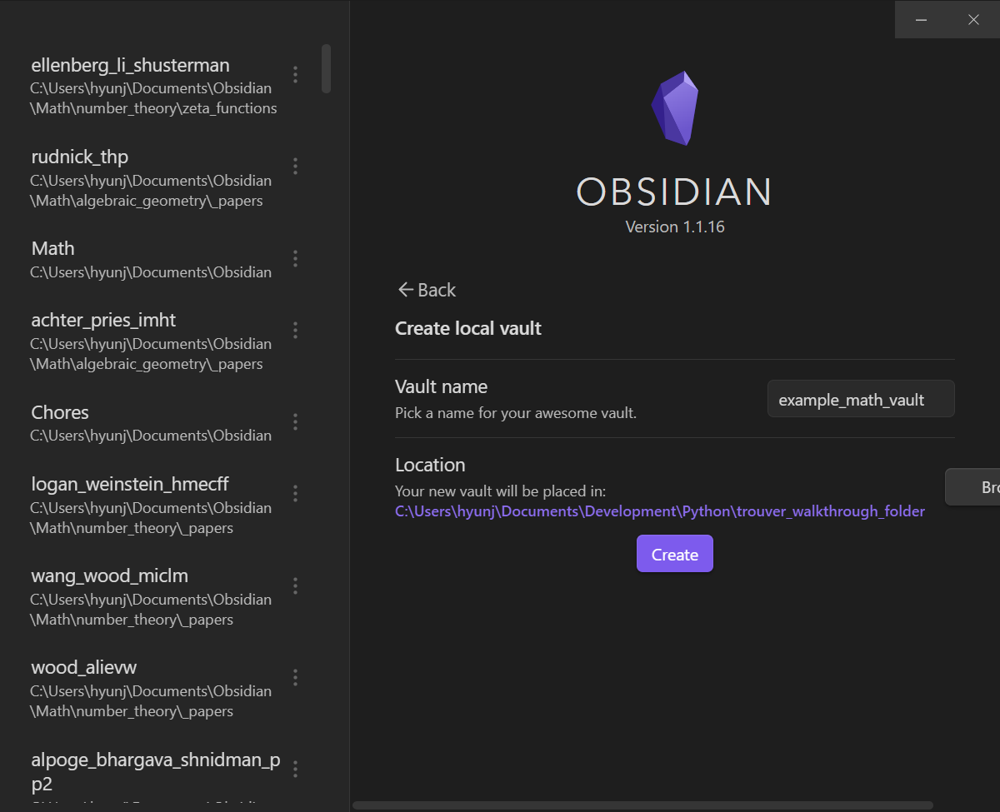
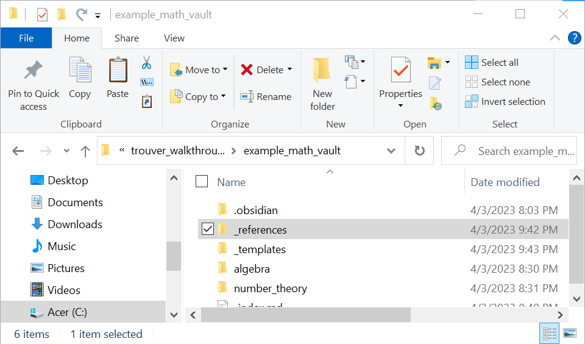
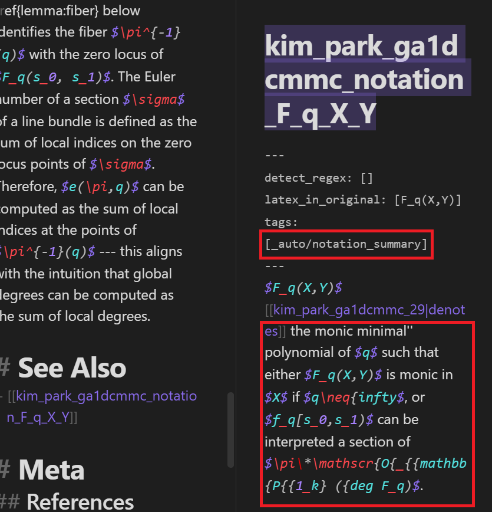

from pathlib import Path
from trouver.helper.files_and_folders import get_download_path
from trouver.latex import find_main_latex_file
from trouver.helper.arxiv import arxiv_id, arxiv_search, download_from_results, extract_last_namestutorial.walkthrough
An end-to-end walkthrough on setting up a
trouver workflow
In this tutorial, we describe a recommended setup for using trouver. Note that the exact details and consequences of this walkthrough may change as trouver or any related software changes; the current version of this walkthrough was written on 12/24/2024 and was written based on trouver version 1.0.0.
Warning A previous version of this tutorial was written around March 2023. Since then,
trouverhas had significant updates and the following tutorial may not fully reflect those changes. If parts of this tutorial seem erroneous or not up-to-date, please let us know by reporting the issue on the GitHub repo.Moreover, user experience with this tutorial may vary — in particular the specific details/outputs in the examples used in this tutorial may not be the same as those that you get.
See also tutorial.concise_code for a concise version of the code used in this tutorial.
Installations
See also how_to.install_trouver.
Go to a command-line (e.g. cmd on Windows, Terminal on Linux) and install trouver with pip:
pip install trouverInstall JupyterLab.
pip install jupyterlabOnce installed, launch JupyterLab with
jupyter-labAlternatively, install the classic Jupyter Notebook via
pip install notebookand launch with
jupyter notebookor use Visual Studio Code to view and edit notebooks.

Install Obsidian.md. Obsidian.md is a note taking software that, among other functionalities, makes it easy to link between notes.
Note that the most important basic functionalities in Obsidian.md are free.
The following window pops up upon launching Obsidian.md
Warning At the time of this writing,
trouverhas not been tested on MacOS extensively. We have also found that running the latest Python versions in Jupyter notebooks on modern MacOS machines (e.g. those using the M1 processor and in particular the arm64 architecture) lead to some issues. cf. stackexchange discussions such as- https://apple.stackexchange.com/questions/436801/m1-mac-mach-o-file-but-is-an-incompatible-architecture-have-x86-64-need-a - https://stackoverflow.com/questions/71502583/jupiter-wont-launch-from-terminal-on-m1-macbook.For MacOS users, it may be useful to go through this tutorial/walkthrough using a Python console or using the Google Colab Notebook for this tutorial/walkthrough.
Creating an Obsidian.md vault
An Obsidian vault is a folder where Obsidian stores your notes as well as setting files, CSS, trash folder, and any sub-folders, notes, and attachments you add yourself, cf. “What exactly is a vault?”.
Let us make a new Obsidian.md vault. For this example, we call the vault example_math_vault and create it in a local folder called trouver_walkthrough_folder. Doing so creates a folder example_math_vault in trouver_walkthrough_folder, i.e. creates the folder trouver_walkthrough_folder/example_math_vault:

Upon creating the vault, Obsidian.md will open the vault:
Obsidian.md functionalities
Creating files and folders in an Obsidian vault
By and large, one can make files and folders fairly liberally in one’s own Obsidian vault (note, however, that Obsidian can experience significant lags on vaults with many notes, say on the order of 10,000, depending on the machine running it).
For example, let us create a new note by clicking on the “New note” icon in the left pane:
Let us name the new note _index:
Let us check that a new file named _index.md has been created in the computer. To open the directory that the file is in, it is convenient to use the Show in system explorer command. To use this command, open the Command Palette by either clicking on the Open command palette icon in the left pane
or by using the Hotkey/keyboard shortcut for the Open command palette command. By default, this shortcut is either Ctrl + p or Cmd + p (or the appropriate variant for your computer).
Either way, the command palette should open up.

Type the word system so that the command palette shows that Show in system explorer command.
Select this command to open the directory containing the _index.md file, which should be the root directory of the vault:
Links and editing files
Let us now create some more files and folders. Note that one can create files and folders for an Obsidian vault without using Obsidian. In particular, one can create such files and folders in the computer’s default file system.
Let us create a folder named algebra and a folder named number_theory. Let us also create files named _index_algebra.md and _index_number_theory.md in these two folders respectively (make sure that the file extensions are .md).
Going back to Obsidian, note that Osidian recognizes that these files and folders have been created:
Now let us edit the _index.md file within Obsidian. In the file, start typing [[_index_algebra]]. Note that Obsidian makes some autocomplete suggestions when we do so:
What we have done is that we have created a link within the Obsidian vault! This is one of Obsidian’s highlighted features - one can make and access links fairly easily within an Obsidian vault. Click on the link to go to the _index_algebra note:
Let us start typing the following text:
Algebra is really fun. Here are some things that I want to learn about
- The Galois group $\operatorname{Gal}(L/K)$ of a Galois field extension
- $\mathbb{A}^1$-homotopy theory.
- etc.Note that there are some LaTeX strings in this text and that Obsidian renders such text as so:
Some users may prefer to use the Source mode as the Default editing mode, as opposed to Live Preview. To change this setting, go to Settings > Editor > Default editing mode:
On can quickly toggle between the editing view and reading view with the Toggle reading/editing view command (which has the Hotkey Ctrl + e or Cmd + e by default):
Quick Switcher
In Obsidian, one can search and open notes by name. Open the Quick switcher either with the Open quick switcher icon in the left pane or with the Hotkey Ctrl + o or Cmd + o:

Start typing _index_number_theory. Note that the quick switcher autocompletes note names. Open the _index_number_theory note by selecting it in the quick switcher:
One can add “aliases” to Obsidian notes to make them better searchable.
More Obsidian features
Obsidian has quite a lot of features that make Obsidian vaults highly useful and customizable. In fact, there are quite a lot of features of Obsidian that the author of trouver regularly uses:
- Vim keybindings
- CSS Styles
- Plugins
- etc.
See the Obsidian Help vault online for more information on Obsidian’s features.
Optional: Adding some files and folders for formatting for trouver
For the purposes of using trouver, we recommend adding a few more folders. We will need a _references folder and a _templates folder and multiple subfolders. For convenience, copy the _references and _templates folders from the nbs/_tests/empty_model_vault directory of the trouver GitHub repository:

Each of these folders have subfolders A-E, F-J, K-O, P-T, and U-Z and subsubfolders corresponding to each letter in the English alphabet. These are for organization. There are also multiple files named README.md in this subsubfolders. Feel free to delete them.
Rationale for the _references and _templates folders
The basic file organization philosophy for trouver is that each mathematical reference should have a dedicated folder in a vault and mathematical (standard information) notes derived from the mathematical reference should belong to this folder (or one of its subfolders/subsubfolders/etc).
The _references folder contains notes that contain information about each mathematical references, e.g. bibliographical information, where to find the reference (say on the arxiv), any other personal notes about the reference. The reference notes will be embedded in the standard information notes so that these information do not have to be manually replicated from standard information note to standard information note.
The _templates folder contains notes which serve as templates for the standard information notes for each reference.
Dividing a LaTeX file
The helper.arxiv module of trouver can use the arXiv API to download the source code of an arXiv article. Moreover, trouver can (attempt to) divide a LaTeX document into not-too-long parts in an Obsidian vault.
See index for an acknowledgement of arXiv.
Obtaining an arXiv source file using trouver
One fortunate state of mathematics is that many manuscripts are made publicly available on arxiv.org before they are formally published. In fact, the source code to many of these manuscripts are also generally available on the arxiv.
As an example, we download the source code for a paper written by the creator of trouver with a collaborator (See Special Thanks for an acknowledgement to Sun Woo Park, the collaborator in question, for permitting this paper to be presented for examples in trouver’s documentation).
url = "https://arxiv.org/abs/2106.10586" # Replace this with the url
results = list(arxiv_search(arxiv_id(url)))
latex_dir = Path(get_download_path()) # Replace this with the path that you can to download the source file in; e.g. r'C:\Users\<your user name>' or r'/home/usr'
downloaded_path = download_from_results(results, latex_dir, source=True)[0]
print(downloaded_path)
reference = downloaded_path.name
author_full_names = [author.name for author in results[0].authors]
author_names = extract_last_names(author_full_names)
latex_file = find_main_latex_file(downloaded_path)
print(latex_file)C:\Users\hyunj\Downloads\kim_park_gm1dcmbmc
C:\Users\hyunj\Downloads\kim_park_gm1dcmbmc\2106.10586v4.Global___mathbb_A__1__degrees_of_covering_maps_between_modular_curves.tex(Manual) Download an arXiv file
Alternatively, if the code above does not work for some reason, one can manually download the source code.
As an example, let us go to the arxiv page for a paper written by the creator of trouver with a collaborator.
On the right, beneath Download:, note that there is a link titled Other formats. Access the link to got to the Format selector page:
Around the bottom of this page is the option to download the source file(s) for the article. Click the Download source link to download the source file(s). Move the files to a different location if desired. For this example, we made a folder named latex_files in the trouver_walkthrough_folder, a subfolder named kim_park_ga1dcmmc in latex_files, and moved the source file into kim_park_ga1dcmmc.
Either the file is compressed and contains multiple files, or the file is not compressed and is actually a .tex file. Attempt to decompress the file. If this fails, rename the file to have the .tex extension. Either way, you should have a .tex file at this stage. For this example, it turns out that the file is compressed and multiple files appear upon decompression.
The author usually finds it convenient to name the (main) .tex file main.tex for the purposes of using trouver, but the name of the .tex file ultimately does not matter.
Using trouver to divide the file and make notes in the Obsidian vault
Now that we have the .tex file set up, we are now ready to the code from trouver to divide it. While the code can really be run from any python interpreter, we highly recommend using a notebook (say via Jupyter or VSCode) to run trouver code.
To open JupyterLab, open a command-line interface and run
jupyter-lab
Create a new notebook and run the following Python import statements:
from pathlib import Path
from trouver.helper.files_and_folders import text_from_file
from trouver.latex.convert import (
divide_preamble, divide_latex_text, custom_commands,
setup_reference_from_latex_parts
)
from trouver.latex.preamble import replace_inclusion_of_style_file_with_codeFurther run (a variant of) the following code. Replace latex_file and vault to be Python Path’s appropriate for your example. For more general instances, you may want to change the reference variable, the location variable, and the author_names varaibles as well.
# One way to get folders accessible in Google Colab is to upload
# zip files of them and to unzip them.
# !unzip /content/example_math_vault.zip
# !unzip /content/latex_files.zip# Change this as desired.
# The name of the reference as well as the name of the folder that contains
# the latex file
reference = reference
# Change this as desired.
latex_file = latex_file
# latex_file = Path(r'C:\Users\<user>') / reference / 'main.tex'
latex_text = text_from_file(latex_file)
preamble, _ = divide_preamble(latex_text)
preamble = replace_inclusion_of_style_file_with_code(preamble, latex_dir)
parts = divide_latex_text(latex_text, downloaded_path)
cust_comms = custom_commands(preamble)
# Replace the below as needed;
# The path to the Obsidian vault in which to setup the "subvault"
# For convenience, we currently set this as the folder where the
# arXiv source file got downloaded into,
# But you may change this to wherever your Obsiidan.md vault
# actually is located at.
vault = Path(downloaded_path)
# Replace the below as needed;
# The path relative to the vault of the directory in which to make
# the new folder containing the new notes.
location = Path('.')
# Replace the below as needed
# The (family) names of the authors;
author_names = author_names
setup_reference_from_latex_parts(
parts, cust_comms, vault, location,
reference,
author_names,
# You may set this to `True` if you set up a `_references` folder
# in your Obsidian.md vault.
create_reference_file_in_references_folder=False,
# You may set this to `True` if you set up a `_templates` folder
# in your Obsidian.md vault.
create_template_file_in_templates_folder=False,
adjust_common_latex_syntax_to_markdown=True,
repeat_replacing_custom_commands=-1,
copy_obsidian_configs=None
)
Now return to the Obsidian vault. Note that a new folder named kim_park_ga1dcmmc has been created in the specified folder of the vault (If you used the code above as-is, then this new folder is within the same folder that the arXiv source .tex file is downloaded in). In Obsidian, open the _index_kim_park_ga1dcmmc note:
Click on any of the links in the _index_kim_park_ga1dcmmc note to open another “index note”:
Click on any of the links in the index note to open a “standard information note”. This note contains some text from the paper on arxiv.
You may need to reload the Obsidian vault before you can view some of these notes; Obsidian may not have registered/“indexed” some of these notes upon their creation. Reload Obsidian using the Reload app without saving commmand in the command palette:
At this point, we recommend that you explore the newly created notes and folders. As an overview, the above code does the following:
- Creates a folder for the reference in the specified folder (In this case, a folder named
kim_park_ga1dcmmcwas created in thenumber_theoryfolder in the vault). - Creates folders corresponding to sections of the LaTeX file.
- Creates various notes/files in the reference folder, including, but not limited to
- standard information notes
- an index note (in this case named
_index_kim_park_ga1dcmmc)
- A template note for the standard information notes for the reference folder.
- This template note may either be in same folder as the index note (if you used the above code as-is), or in the
_templatesfolder of the vault. (In this case, the template note is created in_templates/K-O/Kfolder as the file_template_kim_park_ga1dcmmc.md)
- This template note may either be in same folder as the index note (if you used the above code as-is), or in the
- A copy of the above template note located in the root of the reference folder (In this case, the template note is created as the file
_template_kim_park_ga1dcmmc_2.md).- This copy template note is created for use in case the user wishes to edit the reference folder by opening it as an Obsidian vault; in general, subdirectories of an obsidian vault can be opened as obsidian vaults in themselves. This can be advantageous when the “main” vault has many notes and thus Obsidian runs slowly in the “main” vault.
- A reference note for the reference.
- This reference note may either be in same folder as the index note (if you used the above code as-is), in the
_referencesfolder of the vault (In this case, the reference note is located in the_references/K-O/Kfolder as the file_reference_kim_park_ga1dcmmc.md) - The user is encouraged to fill in this note with bibliographic information of the reference. Note that this reference note is embedded in the standard information notes for the reference, so the information provided in the reference note is easily readable from the standard information notes (in viewing mode).
- This reference note may either be in same folder as the index note (if you used the above code as-is), in the
If you made a mistake in running the above code and would like to re-setup your reference folder, you can use the following code to delete the reference folder, the template note, and the reference note. Enter the letter Y (case sensitive) to confirm that you wish to delete the folder and these notes. Note that this operation cannot be reversed.
from trouver.markdown.obsidian.personal.reference import (
delete_reference_folder
)
# TODO: delete template and reference files even without reference folder.
delete_reference_folder(vault, reference)
Identified reference 'kim_park_gm1dcmbmc' in the vault 'C:\Users\hyunj\Downloads\kim_park_gm1dcmbmc' as the folder 'C:\Users\hyunj\Downloads\kim_park_gm1dcmbmc\kim_park_gm1dcmbmc'...
Aborting deleting reference.
Using these notes
One can fairly liberally modify the contents in a standard information note for the purposes of trouver. Some things that we recommend include, but are not limited to:
- For the user to read more about Obsidian’s features in Obsidian’s official help vault, including Obsidians’ flavor of Markdown syntax
- However, there are many forms of Obsidian’s Markdown syntax that
trouverdoes not yet parse. One example is thattrouverdoes not currently parse inline footnotes.
- However, there are many forms of Obsidian’s Markdown syntax that
- For the user to see what (community) plugins are available for Obsidian.
- Use these plugins at your own risk as there is no way to ultimately ensure that malicious or insecure code is not included in such plugins. However, most to all of these plugins are made open source, so the user can themselves understand how these plugins are implemented.
- For the user to read
trouver’s documentation and to explore the example vaults in thenbs/_testsdirectory oftrouver(’s GitHub repository) - For the user to liberally mark their standard information notes with footnotes with personal memos about their experience reading the specific excerpt(s) from the specific mathematical references.
- For the user to make modifications in the standard information notes to clean up the LaTeX syntax for the purposes of reading in Obsidian.md
- For example,
$ \operatorname{Gal}(L/K)$(notice the space between the$and the\characters) will not render properly due to the space. One can correct this by typing$\operatorname{Gal}(L/K)$instead.
- For example,
- For the user to make links between notes to develop a stronger understanding of the relationship among notes and to build reliable methods for quickly recalling mathematical facts, definitions, or notations.
- For the user to NOT create and maintain notes of the same file name in a single vault.
trouvergenerally operates under the assumption that an Obsidian vault will not have two or more files of the same name. In particular, errors or unexpected consequences may arise if the code oftrouveris run on an Obsidian vault with two files of the same name.
However, here are some modifications that one should not make to a standard information note for the purposes of trouver:
- Changing the title of/deleting the
See Also,Meta,References,Citations and Footnotesheaders/sections; doing so will result in errors in some functionalities oftrouverastrouver’s criteria for recognizing a standard information note is as a note with such headers.- One can nevertheless modify the contents within these sections. Note that the title of the section titled
Topicmay be modified liberally and that sections can be added liberally.
- One can nevertheless modify the contents within these sections. Note that the title of the section titled
- Changing the formatting of the frontmatter YAML metadata (The text in the beginning of a note starting with
---).- One can and should nevertheless modify the contents of the frontmatter YAML metadata as appropriate.
Using Machine learning models
Now that we have set up a reference folder from a LaTeX file, we should make great use of the notes/files in the folder to learn concepts presented in the LaTeX file.
One of the basic challenges in deciphering a mathematical paper is grasping the definitions and notations presented in the paper. The machine learning models can help make this process more reliable and faster.
Currently, the functionalities of trouver are more focused towards finding notations as opposed to definitions. In time, we hope to improve these functionalities to better encompass finding definitions as well. Nevertheless, the functionalities of trouver effectively allow the user to identify where notations are introduced in the various notes in the reference folder and to create, for each notation, a note dedicated to the notation.
Currently, trouver uses the following ML models:
hyunjongkimmath/information_note_typehyunjongkimmath/def_and_notat_token_classification_model- hyunjongkimmath/definition_naming_model and hyunjongkimmath/notation_naming_model
- hyunjongkimmath/notation_summarizations_model
The first is trained using fast.ai and the rest are trained using the Hugging Face Transformers library.
ML models can be computationally intensive to run. As such, trouver roughly operates on a “run-once, record results for later use” principle when it comes to its ML models. Moreover, since ML models inherently cannot be perfect, trouver also operates on general principle to allow for users to manually correct these recorded results without raising errors.
Remark Graphical Processing Units (GPU’s) are not necessary to use these models. In particular, these models can be loaded onto a computer’s CPU.
Downloading and loading the ML models
Since ML models typically are large in file size, the models are not part of the trouver library itself. Instead, the models are made publicly available on Hugging Face, where they can be downloaded.
Run the following code to download the models from the Hugging Face Hub’ and then to load the models. Depending on your internet connection, it may take a few minutes to download this models the first time because each model is at least several hundred megabytes large. Downloading the models may also sometimes temporarily fail and may run correctly once you run the code again after waiting for some time. Moreover, these models are saved to a local cache folder. See Hugging Face cache management for more details. The get_Huggingface_cache_dir function should indicate where these models are stored in your machine.
See also index for a description of what these models accomplish.
import pathlib
from pathlib import Path, WindowsPath
import platform
from huggingface_hub import from_pretrained_fastai
from transformers import AutoModelForSeq2SeqLM, AutoModelForTokenClassification, AutoTokenizer, pipeline
from trouver.helper.files_and_folders import get_huggingface_cache_dir
from trouver.markdown.obsidian.personal.machine_learning.information_note_types import automatically_add_note_type_tags
from trouver.markdown.obsidian.personal.machine_learning.tokenize.def_and_notat_token_classification import auto_mark_def_and_notats
from trouver.markdown.obsidian.personal.machine_learning.definition_and_notation_naming import add_names_to_html_tags_in_info_note
from trouver.markdown.obsidian.personal.machine_learning.notation_summarization import append_summary_to_notation_note# Load the model that categorizes the type(s) of standard information notes
repo_id = 'hyunjongkimmath/information_note_type'
if platform.system() == 'Windows':
temp = pathlib.PosixPath # See https://stackoverflow.com/questions/57286486/i-cant-load-my-model-because-i-cant-put-a-posixpath
pathlib.PosixPath = pathlib.WindowsPath
information_note_type_model = from_pretrained_fastai(repo_id)
pathlib.PosixPath = temp
else:
information_note_type_model = from_pretrained_fastai(repo_id)
# Load the model the finds definitions and notations introduced in standard information notes
model = AutoModelForTokenClassification.from_pretrained('hyunjongkimmath/def_and_notat_token_classification_model')
tokenizer = AutoTokenizer.from_pretrained('hyunjongkimmath/def_and_notat_token_classification_model')
def_notat_classifier = pipeline('ner', model=model, tokenizer=tokenizer)
# Load the models that names definitions and notations.
model = AutoModelForSeq2SeqLM.from_pretrained('hyunjongkimmath/definition_naming_model')
tokenizer = AutoTokenizer.from_pretrained('hyunjongkimmath/definition_naming_model')
definition_naming_pipeline = pipeline('summarization', model=model, tokenizer=tokenizer)
model = AutoModelForSeq2SeqLM.from_pretrained('hyunjongkimmath/notation_naming_model')
tokenizer = AutoTokenizer.from_pretrained('hyunjongkimmath/notation_naming_model')
notation_naming_pipeline = pipeline('summarization', model=model, tokenizer=tokenizer)
# Load the model the summarizes what notations denote
model = AutoModelForSeq2SeqLM.from_pretrained('hyunjongkimmath/notation_summarizations_model')
tokenizer = AutoTokenizer.from_pretrained('hyunjongkimmath/notation_summarizations_model')
summarizer = pipeline('summarization', model=model, tokenizer=tokenizer)
Note that there are some if-else statements used to load the fast.ai models; this is a workaround implemented for Windows users as loading fast.ai models seems to have some issues with Python’s pathlib, cf. https://stackoverflow.com/questions/57286486/i-cant-load-my-model-because-i-cant-put-a-posixpath.
After running this code, we have the Python variables information_note_type_model, def_notat_classifier, definition_naming_pipeline, notation_naming_pipeline, and summarizer. Note that information_note_type_model is a fast.ai model while the others are all technically not models, but rather pipelines of the transformers library that contain models.
To use the models, first run the following import statements:
import warnings
from trouver.markdown.markdown.file import MarkdownFile
from trouver.markdown.obsidian.vault import VaultNote
from trouver.markdown.obsidian.personal.notes import notes_linked_in_notes_linked_in_note, notes_linked_in_note
from trouver.markdown.obsidian.personal.notation import make_notation_notes_from_double_asts, make_notation_notes_from_HTML_tags
from trouver.markdown.obsidian.personal.notation.in_standard_information_note import notation_notes_linked_in_see_also_sectionCategorizing the type(s) of standard information notes
Run the following code to 1. use the information_note_type_model to predict the types of each standard information note in the newly created reference folder, and 2. record these predictions to the standard information notes’ respective frontmatter YAML metadata. Running the following code should take several minutes.
# Change `vault` and `reference` if necessary. These variables were defined in previous code.
# vault = Path(r'C:\Users\<user>\...') # The path to the Obsidian vault
# `reference` = 'kim_park_ga1dcmmc`
index_note = VaultNote(vault, name=f'_index_{reference}')
notes = notes_linked_in_notes_linked_in_note(index_note, as_dict=False)
for note in notes:
if not note.exists():
raise Exception(note.name)
print("Tagging notes")
automatically_add_note_type_tags(information_note_type_model, vault, notes)Tagging notesc:\Users\hyunj\Documents\Development\Python\trouver_py310_venv\lib\site-packages\bs4\__init__.py:435: MarkupResemblesLocatorWarning: The input looks more like a filename than markup. You may want to open this file and pass the filehandle into Beautiful Soup.
warnings.warn(Let us first describe in more detail what the above code does. The first line
index_note = VaultNote(vault, name=f'_index_{reference}')creates a VaultNote object from the trouver.markdown.obsidian.vault module, which represents a note in an Obsidian vault. The note/file that a VaultNote object represents does not have to exist, although runtime errors may be raised on certain operations, such as reading or writing a file, that require an existing file. In the above line of code, we pass vault as an argument, signifying that the VaultNote object should represent a note from the specified Obsidian vault (as opposed to a file in any directory outside of vault). We also pass the Python string f'_index_{reference}' as the argument to the name parameter — in this case the string equals the string '_index_kim_park_ga1dcmmc' — signifying that the VaultNote object should represent the note named _index_kim_park_ga1dcmmc (recall that trouver operates under the assumption that no two notes in an Obsidian vault have the same name).
Furthermore, the VaultNote class has a cache which is supposed to keep track of all the .md files in an Obsidian vault. Creating or deleting files by not using methods from the VaultNote class may make the information stored in this cache obsolete. The VaultNote class will try to re-scan files in the vault to update its cache, but sometimes (for reasons that are not yet well documented) the user may need to manually clear the cache via the VaultNote.clear_cache class method:
VaultNote.clear_cache()Depending on the size of the vault and the specs of the computer running trouver, scanning the files in a vault may take several seconds or more.
The second line of code creates a list of VaultNote objects and stores the list in the variable notes:
notes = notes_linked_in_notes_linked_in_note(index_note, as_dict=False)The notes_linked_in_notes_linked_in_note function is implemented specifically for index notes which keep track of index notes, which in turn keep track of standard information notes, via links; recall that the note _index_kim_park_ga1dcmmc is such an index note:
The code
for note in notes:
if not note.exists():
raise Exception(note.name)checks that the standard information notes listed in notes actually exist (more accurately, the code checks that the links in the notes linked in the note _index_kim_park_ga1dcmmc point to notes that actually exist). Finally,
automatically_add_note_type_tags(information_note_type_model, vault, notes)uses the model to make predictions and record those predictions to the frontmatter YAML metadata of the notes.
The following is a comparison of a note before and after these predictions are made and recorded (note that the note is viewed in Edit mode as opposed to Viewing mode):
Before the predictions, the note only has the _reference/kim_park_ga1dcmmc and _meta/literature_note tags in the tags section of its YAML frontmatter metadata. After the predictions, the _auto/_meta/narrative tag is added.
The _auto prefix is used to signify that the tag is added automatically with the model. The _meta/narrative tag signifies that the content of the note contains a “narrative”; in this example, the note gives an overview of \(\mathbb{A}^1\)-enumerative geometry, so it is fitting to consider it is “narrative”. Some tags that the model will predict for include
_meta/definition_meta/notation_meta/concept_meta/proof_meta/narrative_meta/exercise_meta/remark_meta/example
See the documentation for markdown.obsidian.personal.machine_learning.information_note_types for more details.
We recommend manually editing these tags in your standard information notes as follows (if you have the time and inclination):
- remove the
_autoprefix to confirm the model’s prediction if the model makes a correct prediction. - delete the tag altogether if the model’s prediction is incorrect.
- add tags that the model incorrectly did not predict.
At the very least, we recommend making these edits for the _meta/definition and _meta/notation tags, which signify that a standard information note introduces at least one definition and at least one notation respectively.
For example, upon recognizing that the model correctly predicted the standard information note to contain a narrative, we delete the _auto prefix from the _auto/_meta/narrative tag:
Locating definitions and notations introduced in standard information notes
Next, we use the def_notat_classifier to locate notations introduced in the standard information notes and record these locations in the notes. Run the following code, which may take several to a few dozen minutes:
warnings.filterwarnings("ignore")
index_note = VaultNote(vault, name=f'_index_{reference}')
notes = notes_linked_in_notes_linked_in_note(index_note, as_dict=False)
for note in notes:
assert note.exists()
print("Finding notations")
note_mfs = [MarkdownFile.from_vault_note(note) for note in notes]
notation_notes = [
note for note, mf in zip(notes, note_mfs)
if mf.has_tag('_auto/_meta/definition') or mf.has_tag('_auto/_meta/notation')
or mf.has_tag('_meta/definition') or mf.has_tag('_meta/notation')]
for note in notation_notes:
auto_mark_def_and_notats(note, def_notat_classifier, excessive_space_threshold=2)
# automatically_mark_notations(note, notation_identification_model, reference_name=reference)Finding notationsToken indices sequence length is longer than the specified maximum sequence length for this model (514 > 512). Running this sequence through the model will result in indexing errorsAgain, notes is a list of all standard information notes in the reference folder. The line
note_mfs = [MarkdownFile.from_vault_note(note) for note in notes]Creates a list of MarkdownFile objects of the trouver.markdown.markdown.file module. A MarkdownFile object represents the contents of an Obsidian Markdown file (as opposed to a file itself). In particular, a MarkdownFile object can be created from a VaultNote object (via the MarkdownFile.from_vault_note factory method) or from a Python string (via the MarkdownFile.from_string factory method). In particular, note_mfs is a list of MarkdownFile objects created from the contents of notes.
The line
notation_notes = [note for note, mf in zip(notes, note_mfs) if mf.has_tag('_auto/_meta/definition') or mf.has_tag('_auto/_meta/notation') or mf.has_tag('_meta/definition') or mf.has_tag('_meta/notation')]then creates notation_notes as a sublist of notes consisting only of the notes with at least one of the following tags in their frontmatter YAML metadata:
_auto/_meta/definition_auto/_meta/notation_meta/definition_meta/notation
The code
for note in notation_notes:
auto_mark_def_and_notats(note, def_notat_classifier, excessive_space_threshold=2)Then iterates through notation_notes, using def_notat_classifier to locate notations introduced only in the notes in notation_notes. We recommend using the above code to use the model to locate notations in the notes in notation_notes because the model works better in notes that are deemed likely to contain definitions or notations.
The following is an example of a comparison of a note before and after notations are located (for the current version of trouver, the note named kim_park_ga1dcmmc_29 should suffice as an example):
TODO: update images to reflect current implementation of the def/notat marking
Note that the difference is that html tags surround parts of the text that the model predicts to introduce definitions or notations.
- For definitions, the HTML tags are
<b>tags and have adefinition=""attribute. - For notations, the HTML tags are
<span>tags and have anotation=""attribute. Such HTML tags for notations only surround LaTeX math mode str’s. - For either, the HTML tags have some formatting specifications that draw boxes around the definitions/notations to make them easier to see in Obsidian.ms’s view mode.
An _auto/def_and_notat_identified tag is added to the notes if the model finds definitions and/or notations.
We highly recommend the user to manually make the following edits to correct def_notat_classifier’s mistakes:
- Edit/remove the HTML tags as needed
- Add HTML tags to mark definitions/notations introduced in the text as needed.
Naming marked definitions and notations
After the definitions and notations are marked, we can then attempt to “name” them. See also index for a description of what this means.
Depending on the length and number of notes, this may take at least several or dozens of minutes.
index_note = VaultNote(vault, name=f'_index_{reference}')
notes = notes_linked_in_notes_linked_in_note(index_note, as_dict=False)
for note in notes:
try:
mf = MarkdownFile.from_vault_note(note)
add_names_to_html_tags_in_info_note(
note, def_pipeline=definition_naming_pipeline,
notat_pipeline=notation_naming_pipeline, overwrite=False)
except Exception as e:
print(f'{note.name} raised an exception')
print(e)Your max_length is set to 200, but your input_length is only 116. Since this is a summarization task, where outputs shorter than the input are typically wanted, you might consider decreasing max_length manually, e.g. summarizer('...', max_length=58)
Your max_length is set to 200, but your input_length is only 126. Since this is a summarization task, where outputs shorter than the input are typically wanted, you might consider decreasing max_length manually, e.g. summarizer('...', max_length=63)
Your max_length is set to 200, but your input_length is only 164. Since this is a summarization task, where outputs shorter than the input are typically wanted, you might consider decreasing max_length manually, e.g. summarizer('...', max_length=82)
Your max_length is set to 200, but your input_length is only 85. Since this is a summarization task, where outputs shorter than the input are typically wanted, you might consider decreasing max_length manually, e.g. summarizer('...', max_length=42)
Your max_length is set to 200, but your input_length is only 188. Since this is a summarization task, where outputs shorter than the input are typically wanted, you might consider decreasing max_length manually, e.g. summarizer('...', max_length=94)
Your max_length is set to 200, but your input_length is only 188. Since this is a summarization task, where outputs shorter than the input are typically wanted, you might consider decreasing max_length manually, e.g. summarizer('...', max_length=94)
Your max_length is set to 200, but your input_length is only 58. Since this is a summarization task, where outputs shorter than the input are typically wanted, you might consider decreasing max_length manually, e.g. summarizer('...', max_length=29)--------------------------------------------------------------------------- KeyboardInterrupt Traceback (most recent call last) Cell In [17], line 8 6 try: 7 mf = MarkdownFile.from_vault_note(note) ----> 8 add_names_to_html_tags_in_info_note( 9 note, def_pipeline=definition_naming_pipeline, 10 notat_pipeline=notation_naming_pipeline, overwrite=False) 11 except Exception as e: 12 print(f'{note.name} raised an exception') File c:\users\hyunj\documents\development\python\trouver\trouver\markdown\obsidian\personal\machine_learning\definition_and_notation_naming.py:159, in add_names_to_html_tags_in_info_note(info_note, def_and_notat_pipeline, def_pipeline, notat_pipeline, overwrite, fix_formatting, correct_syntax) 156 raw_info_note_text = info_note.text() 157 raw_info_note_text_minus_html_tags, tags_and_locats = remove_html_tags_in_text( 158 raw_info_note_text) --> 159 predicted_names = predict_names( 160 info_note, def_and_notat_pipeline, def_pipeline, 161 notat_pipeline) 163 # If somehow a different number of HTML tags were found 164 if len(predicted_names) != len(tags_and_locats): 165 # TODO: do warning File c:\users\hyunj\documents\development\python\trouver\trouver\markdown\obsidian\personal\machine_learning\definition_and_notation_naming.py:111, in predict_names(info_note, def_and_notat_pipeline, def_pipeline, notat_pipeline) 107 raise ValueError( 108 "Expected `def_and_notat_pipeline` to be specified or " 109 "both `def_pipeline` and `notat_pipeline` to be specified.") 110 data_points = data_from_information_note(info_note) --> 111 return [_name_prediction_for_data_point( 112 data_point, def_and_notat_pipeline, def_pipeline, notat_pipeline) 113 for data_point in data_points] File c:\users\hyunj\documents\development\python\trouver\trouver\markdown\obsidian\personal\machine_learning\definition_and_notation_naming.py:111, in <listcomp>(.0) 107 raise ValueError( 108 "Expected `def_and_notat_pipeline` to be specified or " 109 "both `def_pipeline` and `notat_pipeline` to be specified.") 110 data_points = data_from_information_note(info_note) --> 111 return [_name_prediction_for_data_point( 112 data_point, def_and_notat_pipeline, def_pipeline, notat_pipeline) 113 for data_point in data_points] File c:\users\hyunj\documents\development\python\trouver\trouver\markdown\obsidian\personal\machine_learning\definition_and_notation_naming.py:129, in _name_prediction_for_data_point(data_point, def_and_notat_pipeline, def_pipeline, notat_pipeline) 127 else: 128 summarizer = notat_pipeline --> 129 summarizer_output = summarizer(data_point['text'], max_length=20, min_length=0) 130 return summarizer_output[0]['summary_text'] File c:\Users\hyunj\Documents\Development\Python\trouver_py310_venv\lib\site-packages\transformers\pipelines\text2text_generation.py:269, in SummarizationPipeline.__call__(self, *args, **kwargs) 245 def __call__(self, *args, **kwargs): 246 r""" 247 Summarize the text(s) given as inputs. 248 (...) 267 ids of the summary. 268 """ --> 269 return super().__call__(*args, **kwargs) File c:\Users\hyunj\Documents\Development\Python\trouver_py310_venv\lib\site-packages\transformers\pipelines\text2text_generation.py:167, in Text2TextGenerationPipeline.__call__(self, *args, **kwargs) 138 def __call__(self, *args, **kwargs): 139 r""" 140 Generate the output text(s) using text(s) given as inputs. 141 (...) 164 ids of the generated text. 165 """ --> 167 result = super().__call__(*args, **kwargs) 168 if ( 169 isinstance(args[0], list) 170 and all(isinstance(el, str) for el in args[0]) 171 and all(len(res) == 1 for res in result) 172 ): 173 return [res[0] for res in result] File c:\Users\hyunj\Documents\Development\Python\trouver_py310_venv\lib\site-packages\transformers\pipelines\base.py:1257, in Pipeline.__call__(self, inputs, num_workers, batch_size, *args, **kwargs) 1249 return next( 1250 iter( 1251 self.get_iterator( (...) 1254 ) 1255 ) 1256 else: -> 1257 return self.run_single(inputs, preprocess_params, forward_params, postprocess_params) File c:\Users\hyunj\Documents\Development\Python\trouver_py310_venv\lib\site-packages\transformers\pipelines\base.py:1264, in Pipeline.run_single(self, inputs, preprocess_params, forward_params, postprocess_params) 1262 def run_single(self, inputs, preprocess_params, forward_params, postprocess_params): 1263 model_inputs = self.preprocess(inputs, **preprocess_params) -> 1264 model_outputs = self.forward(model_inputs, **forward_params) 1265 outputs = self.postprocess(model_outputs, **postprocess_params) 1266 return outputs File c:\Users\hyunj\Documents\Development\Python\trouver_py310_venv\lib\site-packages\transformers\pipelines\base.py:1164, in Pipeline.forward(self, model_inputs, **forward_params) 1162 with inference_context(): 1163 model_inputs = self._ensure_tensor_on_device(model_inputs, device=self.device) -> 1164 model_outputs = self._forward(model_inputs, **forward_params) 1165 model_outputs = self._ensure_tensor_on_device(model_outputs, device=torch.device("cpu")) 1166 else: File c:\Users\hyunj\Documents\Development\Python\trouver_py310_venv\lib\site-packages\transformers\pipelines\text2text_generation.py:191, in Text2TextGenerationPipeline._forward(self, model_inputs, **generate_kwargs) 184 in_b, input_length = tf.shape(model_inputs["input_ids"]).numpy() 186 self.check_inputs( 187 input_length, 188 generate_kwargs.get("min_length", self.model.config.min_length), 189 generate_kwargs.get("max_length", self.model.config.max_length), 190 ) --> 191 output_ids = self.model.generate(**model_inputs, **generate_kwargs) 192 out_b = output_ids.shape[0] 193 if self.framework == "pt": File c:\Users\hyunj\Documents\Development\Python\trouver_py310_venv\lib\site-packages\torch\autograd\grad_mode.py:27, in _DecoratorContextManager.__call__.<locals>.decorate_context(*args, **kwargs) 24 @functools.wraps(func) 25 def decorate_context(*args, **kwargs): 26 with self.clone(): ---> 27 return func(*args, **kwargs) File c:\Users\hyunj\Documents\Development\Python\trouver_py310_venv\lib\site-packages\transformers\generation\utils.py:1745, in GenerationMixin.generate(self, inputs, generation_config, logits_processor, stopping_criteria, prefix_allowed_tokens_fn, synced_gpus, assistant_model, streamer, negative_prompt_ids, negative_prompt_attention_mask, **kwargs) 1739 model_kwargs["attention_mask"] = self._prepare_attention_mask_for_generation( 1740 inputs_tensor, generation_config._pad_token_tensor, generation_config._eos_token_tensor 1741 ) 1743 if self.config.is_encoder_decoder and "encoder_outputs" not in model_kwargs: 1744 # if model is encoder decoder encoder_outputs are created and added to `model_kwargs` -> 1745 model_kwargs = self._prepare_encoder_decoder_kwargs_for_generation( 1746 inputs_tensor, model_kwargs, model_input_name, generation_config 1747 ) 1749 # 5. Prepare `input_ids` which will be used for auto-regressive generation 1750 if self.config.is_encoder_decoder: File c:\Users\hyunj\Documents\Development\Python\trouver_py310_venv\lib\site-packages\transformers\generation\utils.py:549, in GenerationMixin._prepare_encoder_decoder_kwargs_for_generation(self, inputs_tensor, model_kwargs, model_input_name, generation_config) 547 encoder_kwargs["return_dict"] = True 548 encoder_kwargs[model_input_name] = inputs_tensor --> 549 model_kwargs["encoder_outputs"]: ModelOutput = encoder(**encoder_kwargs) 551 return model_kwargs File c:\Users\hyunj\Documents\Development\Python\trouver_py310_venv\lib\site-packages\torch\nn\modules\module.py:1194, in Module._call_impl(self, *input, **kwargs) 1190 # If we don't have any hooks, we want to skip the rest of the logic in 1191 # this function, and just call forward. 1192 if not (self._backward_hooks or self._forward_hooks or self._forward_pre_hooks or _global_backward_hooks 1193 or _global_forward_hooks or _global_forward_pre_hooks): -> 1194 return forward_call(*input, **kwargs) 1195 # Do not call functions when jit is used 1196 full_backward_hooks, non_full_backward_hooks = [], [] File c:\Users\hyunj\Documents\Development\Python\trouver_py310_venv\lib\site-packages\transformers\models\t5\modeling_t5.py:1106, in T5Stack.forward(self, input_ids, attention_mask, encoder_hidden_states, encoder_attention_mask, inputs_embeds, head_mask, cross_attn_head_mask, past_key_values, use_cache, output_attentions, output_hidden_states, return_dict) 1091 layer_outputs = self._gradient_checkpointing_func( 1092 layer_module.forward, 1093 hidden_states, (...) 1103 output_attentions, 1104 ) 1105 else: -> 1106 layer_outputs = layer_module( 1107 hidden_states, 1108 attention_mask=extended_attention_mask, 1109 position_bias=position_bias, 1110 encoder_hidden_states=encoder_hidden_states, 1111 encoder_attention_mask=encoder_extended_attention_mask, 1112 encoder_decoder_position_bias=encoder_decoder_position_bias, 1113 layer_head_mask=layer_head_mask, 1114 cross_attn_layer_head_mask=cross_attn_layer_head_mask, 1115 past_key_value=past_key_value, 1116 use_cache=use_cache, 1117 output_attentions=output_attentions, 1118 ) 1120 # layer_outputs is a tuple with: 1121 # hidden-states, key-value-states, (self-attention position bias), (self-attention weights), (cross-attention position bias), (cross-attention weights) 1122 if use_cache is False: File c:\Users\hyunj\Documents\Development\Python\trouver_py310_venv\lib\site-packages\torch\nn\modules\module.py:1194, in Module._call_impl(self, *input, **kwargs) 1190 # If we don't have any hooks, we want to skip the rest of the logic in 1191 # this function, and just call forward. 1192 if not (self._backward_hooks or self._forward_hooks or self._forward_pre_hooks or _global_backward_hooks 1193 or _global_forward_hooks or _global_forward_pre_hooks): -> 1194 return forward_call(*input, **kwargs) 1195 # Do not call functions when jit is used 1196 full_backward_hooks, non_full_backward_hooks = [], [] File c:\Users\hyunj\Documents\Development\Python\trouver_py310_venv\lib\site-packages\transformers\models\t5\modeling_t5.py:746, in T5Block.forward(self, hidden_states, attention_mask, position_bias, encoder_hidden_states, encoder_attention_mask, encoder_decoder_position_bias, layer_head_mask, cross_attn_layer_head_mask, past_key_value, use_cache, output_attentions, return_dict) 743 attention_outputs = attention_outputs + cross_attention_outputs[2:] 745 # Apply Feed Forward layer --> 746 hidden_states = self.layer[-1](hidden_states) 748 # clamp inf values to enable fp16 training 749 if hidden_states.dtype == torch.float16: File c:\Users\hyunj\Documents\Development\Python\trouver_py310_venv\lib\site-packages\torch\nn\modules\module.py:1194, in Module._call_impl(self, *input, **kwargs) 1190 # If we don't have any hooks, we want to skip the rest of the logic in 1191 # this function, and just call forward. 1192 if not (self._backward_hooks or self._forward_hooks or self._forward_pre_hooks or _global_backward_hooks 1193 or _global_forward_hooks or _global_forward_pre_hooks): -> 1194 return forward_call(*input, **kwargs) 1195 # Do not call functions when jit is used 1196 full_backward_hooks, non_full_backward_hooks = [], [] File c:\Users\hyunj\Documents\Development\Python\trouver_py310_venv\lib\site-packages\transformers\models\t5\modeling_t5.py:335, in T5LayerFF.forward(self, hidden_states) 333 def forward(self, hidden_states): 334 forwarded_states = self.layer_norm(hidden_states) --> 335 forwarded_states = self.DenseReluDense(forwarded_states) 336 hidden_states = hidden_states + self.dropout(forwarded_states) 337 return hidden_states File c:\Users\hyunj\Documents\Development\Python\trouver_py310_venv\lib\site-packages\torch\nn\modules\module.py:1194, in Module._call_impl(self, *input, **kwargs) 1190 # If we don't have any hooks, we want to skip the rest of the logic in 1191 # this function, and just call forward. 1192 if not (self._backward_hooks or self._forward_hooks or self._forward_pre_hooks or _global_backward_hooks 1193 or _global_forward_hooks or _global_forward_pre_hooks): -> 1194 return forward_call(*input, **kwargs) 1195 # Do not call functions when jit is used 1196 full_backward_hooks, non_full_backward_hooks = [], [] File c:\Users\hyunj\Documents\Development\Python\trouver_py310_venv\lib\site-packages\transformers\models\t5\modeling_t5.py:289, in T5DenseActDense.forward(self, hidden_states) 283 if ( 284 isinstance(self.wo.weight, torch.Tensor) 285 and hidden_states.dtype != self.wo.weight.dtype 286 and self.wo.weight.dtype != torch.int8 287 ): 288 hidden_states = hidden_states.to(self.wo.weight.dtype) --> 289 hidden_states = self.wo(hidden_states) 290 return hidden_states File c:\Users\hyunj\Documents\Development\Python\trouver_py310_venv\lib\site-packages\torch\nn\modules\module.py:1194, in Module._call_impl(self, *input, **kwargs) 1190 # If we don't have any hooks, we want to skip the rest of the logic in 1191 # this function, and just call forward. 1192 if not (self._backward_hooks or self._forward_hooks or self._forward_pre_hooks or _global_backward_hooks 1193 or _global_forward_hooks or _global_forward_pre_hooks): -> 1194 return forward_call(*input, **kwargs) 1195 # Do not call functions when jit is used 1196 full_backward_hooks, non_full_backward_hooks = [], [] File c:\Users\hyunj\Documents\Development\Python\trouver_py310_venv\lib\site-packages\torch\nn\modules\linear.py:114, in Linear.forward(self, input) 113 def forward(self, input: Tensor) -> Tensor: --> 114 return F.linear(input, self.weight, self.bias) KeyboardInterrupt:
After running the above code, the predicted names for the definitions and notations should be contained in the definiiton and notation attributes of the HTML tags. If a notation attribute’s value remains blank "", then this effectively means that predicted name for the notation is the entire LaTeX math mode string that the HTML tags encompasses (recall that notation HTML tags only surround LaTeX math mode strings)
Creating notation notes for the notations introduced in standard information notes
Once the notations have been marked with HTML tags and the notations have been named, we use the make_notation_notes_from_HTML_tags function to create new notes dedicated to each notation and to link these newly created notes
This part does not depend on any ML models. Run the following code:
index_note = VaultNote(vault, name=f'_index_{reference}')
notes = notes_linked_in_notes_linked_in_note(index_note, as_dict=False)
for note in notes:
try:
new_notes = make_notation_notes_from_HTML_tags(note, vault, reference_name=reference)
except Exception as e:
print(note.name)
raise(e)
# assert len(new_notes) == 0The following is a comparison of the note before and after the above code is executed:
If some extraneously notation notes are created due to incorrectly marked HTML tags, you may remove/edit the HTML tags, delete tha notation note, and delete the link to the notation note.
Moreover, even if some HTML tags had not been marked to indicate a notation introduced in a standard information note, running the above code again will safely create the notation note after the double asterisks are correctly added. make_notation_notes_from_HTML_tags attempts to create new notation notes without creating duplication notation notes.
TODO: change the below to reflect recent version.
For example, the def_notat_classifier seems to have deemed the LaTeX strings $e(\pi, q)$ and $e(\pi,q)$ to introduce notations, and marked these latex strings with double asterisks **. The make_notation_notes_from_double_asts function above then created notation notes corresponding to these LaTeX strings. However, the author of trouver does not consider these strings to have actually introduced the notations (because the standard information note containing these strings does NOT define what these notations mean). Let us remove the double asterisks, delete the corresponding notation notes, and delete the links to these notation notes:
Summarizing what the notations denote and recording the summaries in the notation notes
Finally, we pass the summarizer pipeline to the append_summary_to_notation_note function to summarize what the notations denote and record these summaries in the notation notes:
Depending on the length and number of notes, this may take at least several or dozens of minutes.
index_note = VaultNote(vault, name=f'_index_{reference}')
notes = notes_linked_in_notes_linked_in_note(index_note, as_dict=False)
for note in notes:
if not note.exists():
print(f"note does not exist: {note.name}")
raise Exception()
print("Summarizing notations")
for note in notes:
notation_notes_linked_in_note = notation_notes_linked_in_see_also_section(note, vault)
for notation_note in notation_notes_linked_in_note:
append_summary_to_notation_note(notation_note, vault, summarizer)Token indices sequence length is longer than the specified maximum sequence length for this model (2259 > 512). Running this sequence through the model will result in indexing errorsSummarizing notationsYour max_length is set to 200, but your input_length is only 184. Since this is a summarization task, where outputs shorter than the input are typically wanted, you might consider decreasing max_length manually, e.g. summarizer('...', max_length=92)
Your max_length is set to 200, but your input_length is only 178. Since this is a summarization task, where outputs shorter than the input are typically wanted, you might consider decreasing max_length manually, e.g. summarizer('...', max_length=89)
Your max_length is set to 200, but your input_length is only 163. Since this is a summarization task, where outputs shorter than the input are typically wanted, you might consider decreasing max_length manually, e.g. summarizer('...', max_length=81)
Your max_length is set to 200, but your input_length is only 164. Since this is a summarization task, where outputs shorter than the input are typically wanted, you might consider decreasing max_length manually, e.g. summarizer('...', max_length=82)
Your max_length is set to 200, but your input_length is only 164. Since this is a summarization task, where outputs shorter than the input are typically wanted, you might consider decreasing max_length manually, e.g. summarizer('...', max_length=82)The following is a comparison of the notation note before and after the append_summary_to_notation_note function is applied to the notation note:


Note that the _auto/notation_summary tag is added to the notation note’s YAML frontmatter meta data to indicate that the summarizer pipeline generated the summary.
We highly recommend manually editing the notation note as follows:
- Correct the notation LaTeX string if necessary (in this example, the notation is the string
$F_q(X,Y)$before the link[[kimpark_ga1dcmmc_29|denotes]]and it looks like there is nothing to correct. However, corrections might be necessary more generally, e.g. ) - Rename the notation notes to be more searchable. Recall that Obsidian’s
Quick switcherprovides suggestions for notes to open based on note/file names. - Correct the autogenerated summary and remove the
_auto/notation_summarytag.
Warning The model is currently not robust enough to generate reliable summaries in general. The model especially struggles with generating LaTeX strings.
For example, this is what the notation note for the string `$F_q(X,Y)$` looks just after the autogenerated summary has been added:
Let us fix the summary, remove the _auto/notation_summary tag (to indicate that the summary in the notation note is no longer autogenerated), and rename the note as follows:

- If the “notation note” does not correspond to a LaTeX string in a standard information note, then delete the “notation note”.
Applications of the notation notes
We also recommend using notation notes in the following ways:
Embed notation notes in footnotes
It can be useful to (manually) embed notation notes in standard notation notes in footnotes. For example, the following is a (standard information) note presenting a lemma about \(F_q(X,Y)\):
Let us add a footnote with the notation note for the notation \(F_q(X,Y)\) embedded:
Let us now view the standard information note in Viewing mode:
The following is what the bottom of the note looks like. Note that the notation note has been embedded:
In particular, the footnote indicates to the reader/user that the LaTeX string $F_q(s_0,s_1)$ depends upon the notation \(F_q(X,Y)\), which denotes the monic minimal polynomial of the closed point \(q \in \mathbb{P}^1_k\). Such footnotes can be useful for users who need to remind themselves of mathematical facts, but have difficulties recalling the precise denotations of various notations.
Link notation notes in other notation notes.
While we do not recommend embedding notation notes into other notation notes (because such efforts might result in multi-level embeddings of notation notes or even circular embeddings of notation notes), we still recommend linking notation notes in other notation notes.
For example, we can write the following notation note:
---
detect_regex: []
latex_in_original: ["e(\\pi,q)"]
tags: []
---
$e(\pi,q)$ [[kim_park_ga1dcmmc_Definition 3.2|denotes]] the Euler number $e(\pi^* \mathscr{O}_{\mathbb{P}^1_k}(\deg F_q), F_q(s_0,s_1))$ where $q \in \mathbb{P}^1_k$ is a closed point and $\pi: C \to \mathbb{P}^1_k$ is a finite morphism over a field $k$ whose characteristic is not $2$ where $C$ is a smooth projective curve, assuming that $\pi^*(\mathscr{O}_{\mathbb{P}^1_k}(\deg F_q))$ is a relatively orientable line bundle of $C$.
- [$e(V,f)$](kim_park_ga1dcmmc_notation_e_V_f_euler_number_of_global_section_of_relatively_orientable_vector_bundle)
- [$F_q(X,Y)$](kim_park_ga1dcmmc_notation_F_q_X_Y_monic_minimal_polynomial_of_closed_point_in_P_1)Note that External links/Markdownstyle links are used to link to the other notation notes as opposed to Internal links/Wikilink-styled links. We use external links/Markdownstyle links here because Obsidian internal links/Wikilink-styled links do not render LaTeX strings.
This note displays as
Note that one can hover the cursor above links in Obsidian to show a preview of the linked note: